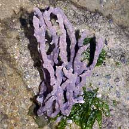
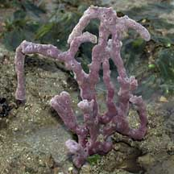
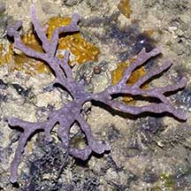
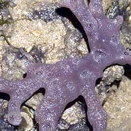
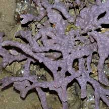
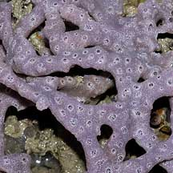
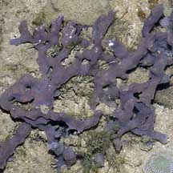
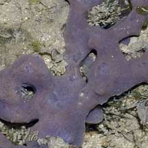

|
|
| sponges text index | photo index |
| Phylum Porifera |
| Purple
branching sponge Callyspongia sp.* Family Callyspongiidae updated Oct 2016 Where seen? Like a little purple bush, this sponge is commonly seen on hard surfaces near the mid-water mark on our Northern shores. Features: A bunch of 'stems' slender (1-1.5cm thick) and long (10-15cm), usually growing upright but sometimes sprawling horizontally hugging the surface. The stems are not extensively branched and cylindrical with rounded tips (not tapering). With small shallow holes regularly spaced along the length of the 'stem' (not just at the tips, and the 'stem' is not a hollow tube). The surface texture is rough. Colours usually purple to lilac. These sponges are draped with sponge synaptid sea cucumbers at some times of the year. |
 Pulau Sekudu, Jan 06 |
 Sometimes draped with synaptid sea cucumbers Chek Jawa, Aug 05 |
 Chek Jawa, Feb 02 |
 Pulau Sekudu, Jan 06 |
|
 Pulau Sekudu, Jun 04  |
 Tuas, Dec 03  |
 Pulau Sekudu, Jul 06  |
*Species are difficult to positively identify without close examination.
On this website, they are grouped by external features for convenience of display.
| Purple branching sponges on Singapore shores |
| Photos of Purple branching sponges for free download from wildsingapore flickr |
| Distribution in Singapore on this wildsingapore flickr map |
| Other sightings on Singapore shores |
|
Links
References
|